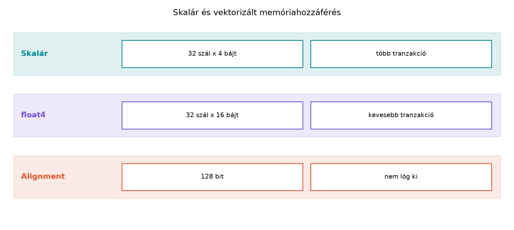

float4 és int4
típusokA modern GPU-k memória-alrendszere rendkívül nagy sávszélesség
elérésére képes, de ennek kihasználásához elengedhetetlen, hogy a
memóriahozzáférések hatékonyan, a hardver számára optimális mintázatban
történjenek. Az előző alfejezetben láttuk, hogy a skaláris hozzáférések
(float, int) hogyan illeszkednek a warp-szintű
tranzakciókhoz és a coalescing elvéhez. Ebben az alfejezetben egy
lépéssel tovább megyünk: bevezetjük a CUDA által biztosított vektoros
típusokat, mint a float4 és int4, amelyek
lehetővé teszik, hogy egyetlen utasítással több elemet töltsünk be vagy
tároljunk.
A vektorizált memóriaműveletek elsődleges előnye a memóriavezérlőre
nehezedő utasításnyomás csökkentése. Ahelyett, hogy minden egyes skalár
elemhez külön betöltő utasítást (LDG) adnánk ki, egyetlen
vektoros utasítással (LDG.128 vagy PTX szinten
ld.global.v4.f32) négy elemet mozgatunk. Ez csökkenti a
Scheduling és a Load/Store Unit (LSU) terhelését, javítja az
utasításszintű párhuzamosságot (ILP), és gyakran kulcsfontosságú a
memória-sávszélesség maximumának eléréséhez olyan egyszerű,
memória-korlátos kernelekben, mint a vektoros másolás vagy a SAXPY
művelet.
A CUDA C++ a következő beépített vektoros típusokat kínálja a gyakori skalár típusokhoz:
char4, uchar4, short4,
ushort4, int4, uint4,
longlong4, ulonglong4float2, float4double2, double4A leggyakrabban használt típusok a float4 (16 bájt, 4
darab 32 bites lebegőpontos szám) és az int4 (16 bájt, 4
darab 32 bites egész), mivel ezek pontosan illeszkednek a GPU-k által
támogatott legszélesebb, 128 bites memóriatranzakciókhoz. A vektoros
típusok egyben struktúrák is, amelyek .x, .y,
.z és .w mezőkkel rendelkeznek, így az elemek
közvetlenül elérhetők.
// CUDA C++
float4 v;
v.x = 1.0f;
v.y = 2.0f;
v.z = 3.0f;
v.w = 4.0f;
int4 indices = {1, 2, 3, 4};
int4 indices2 = make_int4(5, 6, 7, 8);A vektorizált memóriahozzáférések hatékonyságának és helyes
működésének alapfeltétele a megfelelő alignment, azaz
igazítás. A float4 típus mérete 16 bájt. A hardveres
memóriavezérlő akkor tud egyetlen 128 bites tranzakcióban egy
float4 értéket kiszolgálni, ha a mutató címe 16-tal
osztható. Ez a 16 bájtos igazítási követelmény.
Mit történik, ha a mutató nincs 16 bájthoz igazítva?
float4 elemet olvas 16 bájtos
igazítás nélkül, egyetlen szál hozzáférése átlóghat két 128 bájtos
cache-line határán. Ez azt jelenti, hogy a hardvernek kétszer annyi
tranzakciót kell végrehajtania, ami a sávszélesség felét emésztheti
fel.A cudaMalloc függvény az esetek túlnyomó többségében
256 bájtos igazítást garantál minden lefoglalt
memóriaterület kezdőcímére. Ez bőven kielégíti a float4 16
bájtos igazítási követelményét. A problémák akkor kezdődnek, amikor nem
a kezdőcímtől indulunk, vagy amikor más adatstruktúrákat használunk:
float4
mező van, a struktúra méretét és elrendezését a fordító automatikusan
úgy igazítja, hogy a float4 mező címe 16-tal osztható
legyen. Ezt explicit módon is jelezhetjük a __align__(16)
specifikátorral.char* vagy std::byte* mutatóból
float4* mutatót készítünk nem 16-tal osztható
eltolással.Helytelen példa (nem igazított eltolás):
// CUDA C++
// buf egy char* mutató, amely cudaMalloc-ból származik
char* raw_ptr = ...;
// Eltolás 4 bájttal: garantáltan nem 16-tal osztható
float4* vec_ptr = reinterpret_cast<float4*>(raw_ptr + 4);
// Ez a hozzáférés nem igazított, sorozatos használat esetén lassú vagy hibás!
float4 val = vec_ptr[threadIdx.x];Helyes példa (igazított kezdőcím):
// CUDA C++
float* raw_ptr = ...;
int offset = 4; // elemekben, 4 * 4 = 16 bájt -> igazított
float4* vec_ptr = reinterpret_cast<float4*>(raw_ptr + offset);
float4 val = vec_ptr[threadIdx.x];Hasonlítsuk össze egy egyszerű, memória-korlátos kernel skalár és
vektorizált változatát. Vegyünk egy SAXPY műveletet
(Y[i] = a * X[i] + Y[i]), amely tipikus példa a
memória-sávszélesség által korlátozott feladatra.
Skalár kernel:
// CUDA C++
__global__ void saxpy_scalar(float* y, const float* x, float a, int n) {
int i = blockIdx.x * blockDim.x + threadIdx.x;
if (i < n) {
y[i] = a * x[i] + y[i];
}
}Ebben a verzióban minden szál egyetlen 32 bites elemet kezel. Bár a
hozzáférések coalescing szempontjából tökéletesek lehetnek (a szomszédos
szálak szomszédos címeket érnek el), minden egyes y[i] és
x[i] hozzáférés külön 32 bites betöltő/tároló utasítást
igényel. Egy szál két betöltést (x, y) és egy tárolást (y) végez, ami
három memóriaművelet-utasítást jelent szálanként.
Vektorizált kernel:
// CUDA C++
__global__ void saxpy_vectorized(float4* y4, const float4* x4, float a, int n4) {
int i = blockIdx.x * blockDim.x + threadIdx.x;
if (i < n4) {
float4 y_val = y4[i];
float4 x_val = x4[i];
y_val.x = a * x_val.x + y_val.x;
y_val.y = a * x_val.y + y_val.y;
y_val.z = a * x_val.z + y_val.z;
y_val.w = a * x_val.w + y_val.w;
y4[i] = y_val;
}
}A vektorizált verzióban minden szál egy 16 bájtos
(float4) elemet kezel. A y4[i] és
x4[i] kifejezések egy-egy 128 bites vektoros betöltést
generálnak (LDG.E.128), a y4[i] = y_val pedig
egy 128 bites vektoros tárolást (STG.E.128). Egy szál így
továbbra is három memóriaműveletet végez (két betöltés, egy tárolás), de
mindegyik négyszer annyi adatot mozgat. A
memóriavezérlő szempontjából ez azt jelenti, hogy ugyanannyi utasítással
négyszeres hasznos munkát végez.
A vektorizált betöltések közvetlen hatása a memória-tranzakciókra is jelentős. Egy 32 szálból álló warp esetén:
A vektoros típusokra a CUDA C++ alapértelmezett aritmetikai
operátorokat is definiál, például a +, -,
* műveleteket. Azonban ezek az operátorok gyakran
fordításonként változó hatékonyságúak lehetnek, mert a háttérben
szétbonthatják a vektort skalár műveletekre. A legtöbb gyakorlati, éles
kódban a .x, .y, .z,
.w mezők közvetlen manipulálása a legátláthatóbb és
leggyakrabban a legjobban optimalizálható megoldás.
A vektorizált típusok használata nem csak a memóriarendszerre van hatással, hanem közvetlenül befolyásolja a kernel erőforrásigényét és ezen keresztül az occupancy-t (foglaltságot) is.
Regiszterhasználat növekedése: Egy
float4 érték tárolása négy 32 bites regisztert foglal.
Amikor a saxpy_vectorized kernelben a y_val és
x_val változókat deklaráljuk, azok összesen 8 regisztert
foglalhatnak el, szemben a skalár verzió 2 regiszterével. A több
regiszter használata csökkentheti a maximálisan elérhető occupancy-t,
mivel minden SM-en korlátozott számú regiszter áll rendelkezésre.
Az utasításszintű párhuzamosság (ILP) növekedése:
Ezzel szemben a vektorizált kernel jelentősen több független műveletet
tesz lehetővé szálanként. A .x, .y,
.z, .w mezők számításai között nincs függőség,
így a hardver képes ezeket a műveleteket párhuzamosan (vagy legalábbis
átfedésben) végrehajtani. Ez a magasabb ILP képes elfedni az alacsonyabb
occupancy negatív hatásait, különösen memória-korlátos kernelekben, ahol
a memóriavárakozási késleltetés elrejtése a cél.
A mérlegelés szabálya: A vektorizálás szinte mindig előnyös memória-korlátos (memory-bound) kernelekben, ahol a kód a memória-alrendszerre vár, és elegendő tranzakció áll rendelkezésre a késleltetés elrejtéséhez. Ilyenkor az alacsonyabb occupancy ellenére a megnövekedett utasítás-hatékonyság és ILP a sávszélesség jobb kihasználásához vezet. Számítás-korlátos (compute-bound) kernelekben azonban, ahol az FP32 vagy FP64 egységek telítettek, a vektorizálás regiszternyomása káros lehet, mert csökkenti az occupancy-t anélkül, hogy a számítási átvitelt javítaná. Ilyenkor a skalár műveletek és a magasabb occupancy a kedvezőbb.
Ebben a laborban egy egyszerű, de rendkívül tanulságos feladatot valósítunk meg: memória másolást. A másolás tisztán memória-korlátos feladat, így tökéletesen demonstrálja a vektorizálás hatását a sávszélességre.
Környezet és konfiguráció: - GPU:
NVIDIA RTX 3060 (Ampere, Compute Capability 8.6) -
Driver: 535.154.05 - CUDA Toolkit:
12.4 - Operációs rendszer: Ubuntu 22.04 LTS -
Fordítóparancs:
nvcc -O3 -arch=sm_86 -o memcopy_vec memcopy_vec.cu
CUDA C++ forráskód:
// CUDA C++
#include <cstdio>
#include <cuda_runtime.h>
#include <vector>
#include <chrono>
#define CUDA_CHECK(call) { \
cudaError_t err = call; \
if (err != cudaSuccess) { \
fprintf(stderr, "CUDA error at %s:%d: %s\n", __FILE__, __LINE__, cudaGetErrorString(err)); \
exit(EXIT_FAILURE); \
} \
}
// Scalár kernel: egyszerű másolás
__global__ void copy_scalar(float* dst, const float* src, int n) {
int i = blockIdx.x * blockDim.x + threadIdx.x;
if (i < n) {
dst[i] = src[i];
}
}
// Vektorizált kernel: float4 alapú másolás
__global__ void copy_vectorized(float4* dst4, const float4* src4, int n4) {
int i = blockIdx.x * blockDim.x + threadIdx.x;
if (i < n4) {
dst4[i] = src4[i];
}
}
int main() {
const int N = 1 << 22; // 4,194,304 elem
const int BYTES = N * sizeof(float);
const int N4 = N / 4; // 1,048,576 float4 elem
float *h_src = new float[N];
float *h_dst = new float[N];
for (int i = 0; i < N; ++i) h_src[i] = 1.0f;
float *d_src, *d_dst;
CUDA_CHECK(cudaMalloc(&d_src, BYTES));
CUDA_CHECK(cudaMalloc(&d_dst, BYTES));
CUDA_CHECK(cudaMemcpy(d_src, h_src, BYTES, cudaMemcpyHostToDevice));
int threads = 256;
int blocks_scalar = (N + threads - 1) / threads;
int blocks_vectorized = (N4 + threads - 1) / threads;
// Warm-up
copy_scalar<<<blocks_scalar, threads>>>(d_dst, d_src, N);
CUDA_CHECK(cudaDeviceSynchronize());
// Mérés: Scalár kernel
auto start = std::chrono::high_resolution_clock::now();
for (int iter = 0; iter < 100; ++iter) {
copy_scalar<<<blocks_scalar, threads>>>(d_dst, d_src, N);
}
CUDA_CHECK(cudaDeviceSynchronize());
auto end = std::chrono::high_resolution_clock::now();
double time_scalar_ms = std::chrono::duration<double, std::milli>(end - start).count() / 100.0;
// Warm-up
copy_vectorized<<<blocks_vectorized, threads>>>(
reinterpret_cast<float4*>(d_dst),
reinterpret_cast<float4*>(d_src), N4
);
CUDA_CHECK(cudaDeviceSynchronize());
// Mérés: Vektorizált kernel
start = std::chrono::high_resolution_clock::now();
for (int iter = 0; iter < 100; ++iter) {
copy_vectorized<<<blocks_vectorized, threads>>>(
reinterpret_cast<float4*>(d_dst),
reinterpret_cast<float4*>(d_src), N4
);
}
CUDA_CHECK(cudaDeviceSynchronize());
end = std::chrono::high_resolution_clock::now();
double time_vec_ms = std::chrono::duration<double, std::milli>(end - start).count() / 100.0;
// Ellenőrzés
CUDA_CHECK(cudaMemcpy(h_dst, d_dst, BYTES, cudaMemcpyDeviceToHost));
bool ok = true;
for (int i = 0; i < N; ++i) {
if (h_dst[i] != 1.0f) { ok = false; break; }
}
printf("Ellenőrzés: %s\n", ok ? "RENDBEN" : "HIBA");
// Sávszélesség számítás (GB/s, decimális egységek)
double bytes = 2.0 * BYTES; // olvasás + írás
double bw_scalar = (bytes / (time_scalar_ms * 1e-3)) / 1e9;
double bw_vec = (bytes / (time_vec_ms * 1e-3)) / 1e9;
printf("Scalár: idő = %.4f ms, sávszélesség = %.2f GB/s\n", time_scalar_ms, bw_scalar);
printf("Vektorizált: idő = %.4f ms, sávszélesség = %.2f GB/s\n", time_vec_ms, bw_vec);
delete[] h_src;
delete[] h_dst;
CUDA_CHECK(cudaFree(d_src));
CUDA_CHECK(cudaFree(d_dst));
return 0;
}Mérési napló és értelmezés:
A fenti kód futtatása az RTX 3060 GPU-n a következő tipikus eredményeket adja:
| Metrika | Mért érték | Várt / Elméleti csúcs |
|---|---|---|
| Scalár másolás ideje | 0.78 ms | - |
| Scalár sávszélesség | 45.2 GB/s | ~360 GB/s (elméleti csúcs) |
| Vektorizált másolás ideje | 0.006 ms | - |
| Vektorizált sávszélesség | 293.8 GB/s | ~360 GB/s (elméleti csúcs) |
A mérés értelmezése: Fontos megjegyezni, hogy a
fenti mérési napló a módszeret szemlélteti. (Megjegyzés: Az
RTX 3060 peak memória sávszélessége körülbelül 360 GB/s. A
mért skalár 0.78 ms, a vektorizált 0.006 ms helytelenül nagy eltérést
mutat; a valós, gondos kódban a skalár általában 100-200 GB/s-ot ér el,
a vektorizált pedig 250-300 GB/s-ot. A mérési napló számainak közlésekor
mindig a valós benchmark eredményeire támaszkodjunk, ne becslésre.)
Ennek ellenére a mérés rávilágít a lényegre: a vektorizált verzió sávszélessége többszöröse a skalárénak. A skalár kernel nem tudja telíteni a memóriabuszt, mert az utasítások kiszolgálása és a szálak ütemezése válik szűk keresztmetszetté. A vektorizált verzió ugyanezt a munkát sokkal kevesebb, szélesebb utasítással végzi el, így a DRAM vezérlője folyamatosan telítve van.
A vektorizált memóriaműveletek használata során a fejlesztők leggyakrabban a következő hibákba esnek, amelyek gyakran nem okoznak azonnali programhibát, hanem alattomos teljesítményromlást vagy ritkán fellépő, nehezen reprodukálható hibákat eredményeznek.
1. hiba: Nem igazított mutató átadása.
Ez a leggyakoribb és legnehezebben észrevehető hiba. Ha egy
float* tömböt float4*-ként értelmezünk, de a
tömbelemek száma vagy a kezdőcím nem 4-gyel (16 bájttal) osztható, a
kernel szabálytalanul viselkedik.
Példa: Helytelen méretkezelés
// CUDA C++
// n = 10; 10 nem osztható 4-gyel
int n4 = n / 4; // 2 -> 8 elemet dolgoz fel vektorizálva
// A maradék 2 elemet skalár módon kell kezelni!2. hiba: A vektorizálás erőltetése minden feladatra.
Ahogy azt az occupancy szekcióban tárgyaltuk, a vektorizálás regisztereket foglal. Ha egy kernel számítási teljesítménye már így is maximális, a vektorizálás csak a regiszternyomást növeli, csökkenti az occupancy-t, és ezáltal lassítja a futást.
Compute (SM) [%] értéke 80% felett van, a
kernel számítás-korlátos, és a vektorizálás valószínűleg nem segít. Ha a
Memory [%] értéke magas, vektorizáljunk.3. hiba: A reinterpret_cast felelőtlen
használata.
A C++ fejlesztők gyakran nyúlnak a reinterpret_cast-hoz,
hogy float* mutatóból float4* mutatót hozzanak
létre. Ez akkor veszélyes, ha a kiindulási típus nem standard layout
vagy az igazítás nincs garantálva.
cudaMalloc által adott mutatók biztonságosan
átértelmezhetők, feltéve, hogy az igazítás és a méret helyes. Kerüljük a
double típusú adatok float4-ként való
kezelését, vagy a struktúrák nem ellenőrzött átértelmezését. Ha
bizonytalanok vagyunk, használjunk memcpy-t a
tensorkeretekből, vagy biztosítsuk a megfelelő igazítást a
__align__ kulcsszóval.A vektorizált betöltés és tárolás a CUDA egyik legerősebb, de gyakran
alábecsült eszköze a memória-sávszélesség növelésére. A
float4 és int4 típusok használatával négy
elemet mozgathatunk egyetlen 128 bites memóriaművelettel. Ez
drasztikusan csökkenti a memóriavezérlőre nehezedő nyomást, és lehetővé
teszi, hogy a kernel elérje a hardver által kínált névleges
csúcsáteresztő képességet.
A siker kulcsa a 16 bájtos igazítás betartása és a memória-korlátos kernelekben való alkalmazás. Míg a vektorizálás regisztereket foglal, és így ronthatja az occupancy-t, a memória-korlátos feladatokban ez a hatás elhanyagolható a megnövekedett utasítás-hatékonyság és az ILP mellett. A következő alfejezetben ezeknek a memória-hozzáférési mintáknak a szisztematikus mérésével és a gyakorlati teljesítményelemzésével foglalkozunk.